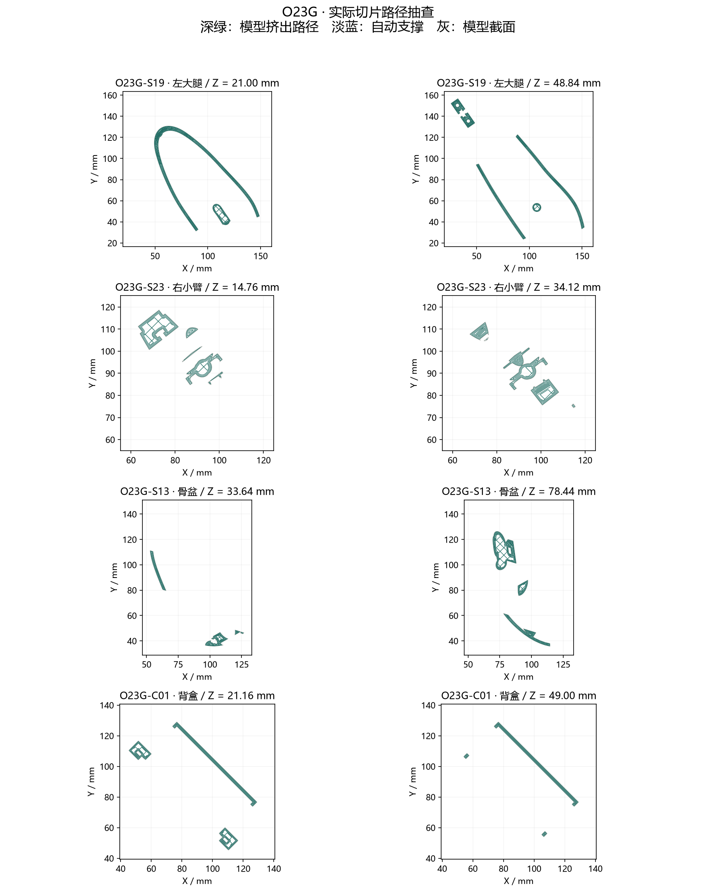

POSEDOLL LAB / O23G / 导出验证
32 件 STL 修复完成
原来有 20 件 STL 回读失败。本轮清理导出网格并验证实际切片；装配模型、关节位置、外形和布线位置保持不变。
32 / 32封闭 · 单实体 · 面朝向正确
32 / 32实际切片通过 · 零网格修复
522 姿态STL 回装后无新增相邻干涉
原来为什么失败？
部分极短边在 STL 单精度坐标量化、顶点焊接后塌缩；旧布尔运算还留下了方向相反的重合薄面。背盒中保留了旧螺钉柱修改产生的残面。只检查源网格的索引封闭性不足以发现这些问题。
本轮清理退化面、对消零厚度重合面，并在必要时用不超过 0.001 mm 的公差整理网格。背盒按现有相同参数重新生成。孔位、关节开口、连接杆和线槽均保留，未使用整体补洞或体素重建。
哪些检查保持通过？
44 条连接与底座材料完整性、每个相邻部件最多 3 根连接、33 个线材固定座、8 条内部通道、固定配合，以及原有 408 个日常姿态和 114 个过渡姿态，均使用导出的 STL 重新核对。
实际打印路径抽查
下图来自已生成的 G-code。深绿是模型路径，淡蓝是支撑，灰色是对应模型截面。

OrcaSlicer 2.4.2 · A1 mini · PLA · 0.4 mm 喷嘴 · 0.16 mm 层高 · 3 道壁 · 20% 填充 · 自动支撑。两件零件调整了摆放以生成模型首层。验证工程每件一盘，尚未实物试打；支撑拆除与强度仍需确认。
逐件文件
本包包含本轮新制或修改的 32 件；其余沿用 O22F7 的关节打印件继续使用原文件。
¹ 总层数包含自动支撑的中间层，不等于模型高度除以常规层高。
详细原因与复现说明 · 导出统计 · 回归记录 · 切片记录 · 打开完整人偶
原装配几何 SHA-256：0c8009b72d72fce6acdf76d06cdcbebd2b16949ee578720b688713e71b34671d